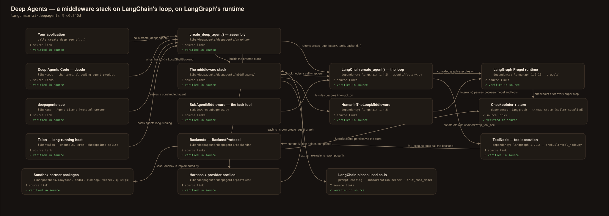
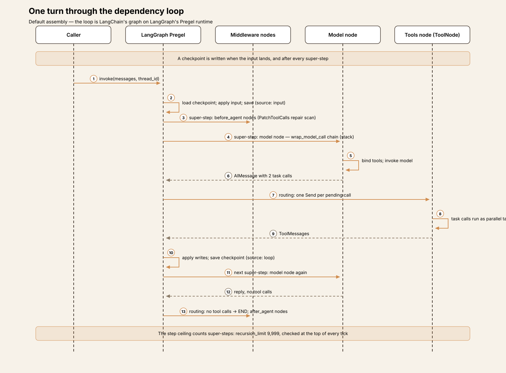
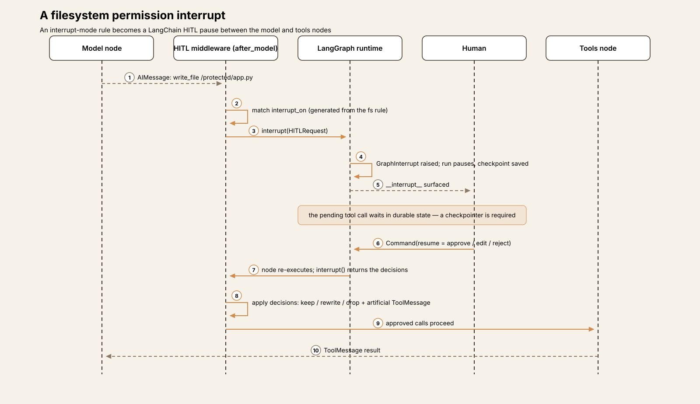
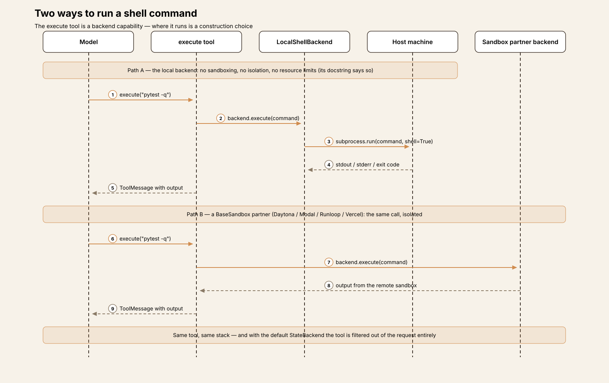
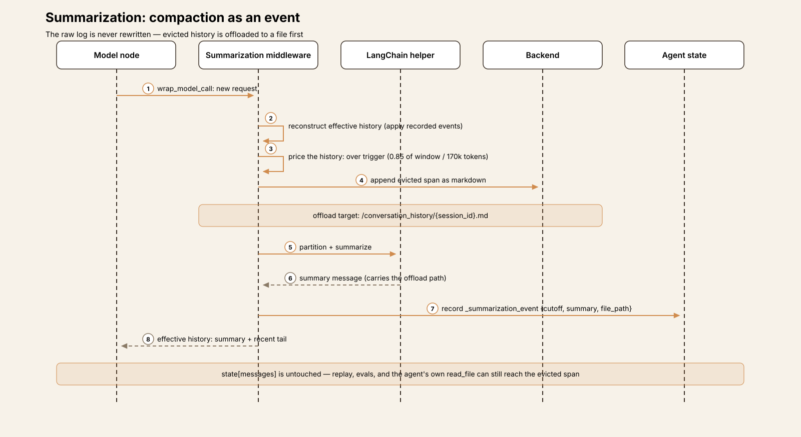
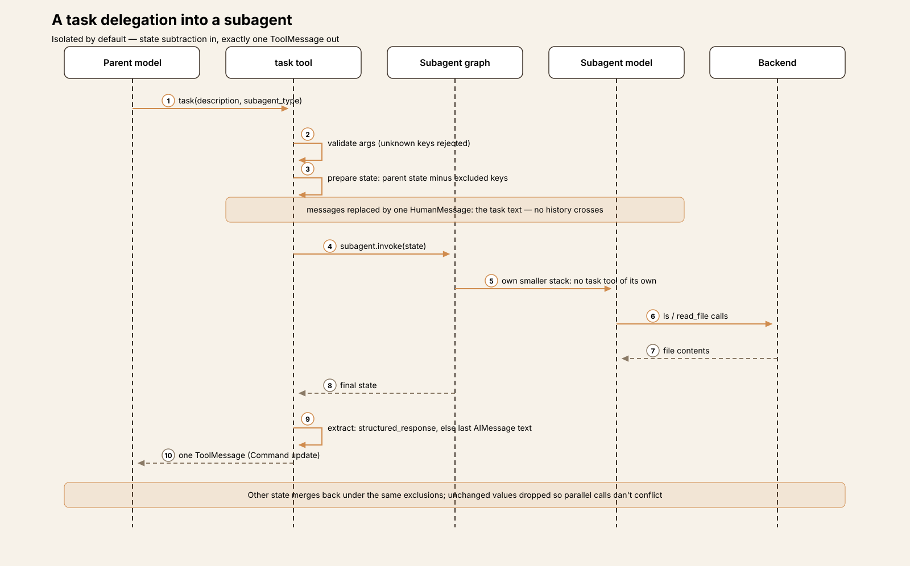

Agent Harness Anatomy #16: Deep Agents — the harness that is a middleware stack, not a loop
Series: Agent Harness Anatomy — top-down dissections of real agent harnesses, grounded in verifiable source code. Every behavioral claim below carries a footnote to a pinned GitHub permalink; the full evidence lives in the endnotes.
Version block
- Repo: langchain-ai/deepagents
- Pinned: tag
deepagents==0.7.25→c6c340d47d2013a2e7b7230698f73977b7de6756(released 2026-10-14) - Language: Python ≥3.11 — the core package is 30,088 LOC (its test suite is another 64,433), inside a monorepo that also ships a terminal coding app, an ACP server, an experimental long-running host, and partner sandbox packages
- License: MIT
- Claim under test: "The batteries-included agent harness" — an opinionated agent that runs out of the box, built on LangGraph
A note on the pin, and on what kind of object this is. Every previous teardown in this series dissected a program: a loop you could point at. Deep Agents is a library, and its defining decision is that it does not contain the loop at all. create_deep_agent() assembles configuration — middleware, backends, subagents, a prompt — and hands it to LangChain's create_agent(), which builds the loop on LangGraph. So this teardown reads two things at once: the code in this repo, and the boundary between that code and its two dependencies. And because the loop is the one mechanism a reader cannot understand from this repo alone, it also reads the dependency source itself — LangChain and LangGraph, each pinned separately (langchain 1.4.5 and langgraph 1.2.15, the versions this pin resolves against; see the endnotes preamble). Where a mechanism belongs to LangChain or LangGraph, the article says so and the endnote names the repo it points into; nothing below attributes dependency code to this repo.
The repo is a release-please monorepo in which each package versions independently. The pin is the core package's release: libs/deepagents/pyproject.toml declares version 0.7.25, and the tag names exactly that package. The sibling packages sit at the same commit and are covered as interfaces, not as the pinned artifact.

Explore the interactive architecture diagram 16 nodes, 19 edges — pan, zoom, and follow every subsystem linkThe mental model
Hold one sentence and the rest follows: Deep Agents is an ordered stack of middleware around someone else's loop, plus a pluggable backend that decides where files and shell commands live.
The project's own architecture document draws the three layers plainly: LangGraph is the runtime (state, checkpoints, streaming, interrupts); LangChain's create_agent() is the agent abstraction that builds the loop; Deep Agents "is an opinionated harness on top of create_agent(). It does not introduce a new runtime."1 Reading create_deep_agent() bears this out completely — it is 700 lines of assembly that end in a create_agent(...) call.2 There is no turn loop anywhere in the package to summarize, because there is no turn loop in the package.
What the package contributes instead is a default stack. In order: a filesystem middleware that provides the file and shell tools; a subagent middleware that provides delegation; a summarization middleware that manages context; a repair middleware for interrupted runs; optionally skills, memory, and human-in-the-loop middleware; and per-model "harness profiles" that adjust the stack for a specific provider's model. Every entry is a LangChain AgentMiddleware — the hook machinery (before_agent, wrap_model_call, wrap_tool_call) is LangChain's — but the middleware classes themselves, and the order they're assembled in, are this repo's design.3
The second load-bearing decision is the backend. One protocol object decides where the agent's files live (in graph state, in a LangGraph store, on real disk), whether shell execution exists at all, and where evicted context is offloaded. Swap the backend and the same agent goes from an ephemeral in-memory workspace to a real directory to a remote sandbox — the security story of the whole system is, in the end, a statement about which backend the application wired in (T3).
And the third: subagents by state subtraction. A delegated agent is a fresh graph whose initial state is the parent's state minus a curated set of keys, with the message history replaced by a single task description. Isolation is not a sandbox or a separate process; it is a filter applied to a dictionary (T5).
How the stack is put together
Assembly. create_deep_agent() (in graph.py) resolves the model — a "provider:model" string goes through LangChain's init_chat_model, with provider-profile adjustments4 — resolves the harness profile for that model, takes the caller's backend or defaults to StateBackend(), processes subagent specs, builds the middleware stack, composes the system prompt (caller text plus the profile's suffix; the authored base prompt earlier versions shipped is now deprecated legacy), and returns LangChain's graph with two pieces of configuration stamped on: a recursion limit of 9,999 and run metadata tagging the integration as deepagents for tracing.5
The stack, concretely. The main-agent stack is built in one list and a series of appends:6
FilesystemMiddleware— tools, permissions, evictionSubAgentMiddleware— thetasktool (present whenever subagents exist; a default general-purpose subagent is auto-added, so in practice always)- Summarization middleware (Deep Agents' own, §Memory)
PatchToolCallsMiddleware— dangling-call repair- Harness-profile extra middleware for the model, then
SkillsMiddlewareifskills=was passed - Prompt-caching middleware (LangChain's Anthropic caching middleware, plus Bedrock/Fireworks variants when those packages are installed)7
MemoryMiddlewareifmemory=was passed, then LangChain'sHumanInTheLoopMiddlewareif any interrupt configuration exists, thenUnsupportedContentMiddleware
Customization is stack surgery, by name. A caller-supplied middleware whose .name matches a default replaces it in place, preserving order; a new one is inserted after the core scaffolding, ahead of the profile/memory tail.8 Harness profiles can go further — adding middleware, overriding tool descriptions, appending prompt text, and excluding tools or middleware — with two guardrails. First, FilesystemMiddleware and SubAgentMiddleware are protected scaffolding: a profile that tries to exclude either fails construction with a ValueError, because removing them "silently breaks core features" — the filesystem middleware also carries the permission enforcement, which the code names a security guarantee.9 Second, every exclusion entry must match something in the assembled stacks, or construction fails — a typo'd exclusion is an error, not a no-op. Tool exclusion runs dead last, in a dedicated middleware appended after all caller middleware, so an excluded tool cannot be restored by a caller's request wrapper.10
Subagents get a smaller stack — filesystem, summarization, patch, profile extras, skills, prompt caching; memory only for forks — and, notably, no SubAgentMiddleware: a subagent does not receive a task tool of its own (T5).11
Package map
The core package concentrates in three directories, exactly as the project's architecture doc says.
| Path | Role |
|---|---|
libs/deepagents/deepagents/graph.py |
create_deep_agent() — assembly only; DeepAgentState |
libs/deepagents/deepagents/middleware/ |
The stack: filesystem, subagents, summarization, skills, memory, patch-tool-calls, plus helpers (eviction, blob offload, prompt caching, tool exclusion, fs-interrupt glue) and opt-ins (rubric, async subagents) |
libs/deepagents/deepagents/backends/ |
BackendProtocol + State / Store / Filesystem / LocalShell / Composite / ContextHub backends and the BaseSandbox base class |
libs/deepagents/deepagents/profiles/ |
Per-model harness profiles (Anthropic Sonnet/Opus/Haiku, OpenAI Codex, NVIDIA Nemotron built in) and provider profiles; public registration functions |
libs/code/ |
Deep Agents Code (dcode) — the terminal coding-agent product built on the SDK |
libs/acp/ |
deepagents-acp — an Agent Client Protocol server |
libs/talon/ |
Experimental host for long-running agents (messaging channels, cron) |
libs/partners/ |
Sandbox backend packages: Daytona, Modal, Runloop, Vercel, QuickJS |
The core loop
There is no loop in this repo to write up — the loop is LangChain's create_agent graph executing on LangGraph, and this repo's docs describe it in one sentence: the runtime drives turns in which the model receives the history, the prompt, and the tools, and the loop continues until the model produces a final response.1 But a teardown that stopped there would leave the harness's most important behavior undescribed, so this section reads the loop where it actually lives: in the two dependencies, pinned at langchain 1.4.5 and langgraph 1.2.15 (notes 50+). What this repo contributes around that loop follows after.
The graph LangChain builds. create_agent is a factory that compiles a LangGraph StateGraph with two working nodes. The model node builds a ModelRequest from state, passes it through the chained wrap_model_call handlers — which is where Deep Agents' request-time middleware (capability filtering, summarization's history reconstruction) actually runs — and invokes the model with the request's tools bound. The tools node is LangGraph's prebuilt ToolNode, constructed with the caller and middleware tools and the chained wrap_tool_call wrappers.50 Every middleware hook of the state kind — before_agent, before_model, after_model, after_agent — becomes a graph node of its own, chained around the two: the run enters through the first before_agent node, each turn enters through the first before_model node and leaves through the first after_model node, and the run exits through the last after_agent node.52 The loop is closed by two routing functions. After the model: a response with no tool calls routes to END — the code comments this "the classic exit condition for an agent loop" — while pending tool calls fan out as one Send per call into the tools node, so a batch of independent calls becomes parallel tasks. After the tools: unless every executed tool said return_direct or a structured-output tool ran, control returns to the loop entry and the model sees the results.51
One question this series asks every harness — what runs beneath the stack you can see? — has a clean answer here: create_agent adds no middleware of its own. The stack Deep Agents assembles is the whole stack; the factory's only additions are inside its nodes (the model node first repairs tool calls whose arguments are invalid JSON, a small per-call pass; structured-output parsing wraps the response) and in the config it stamps — which is where the step ceiling comes from.55
The runtime underneath: super-steps and checkpoints. LangGraph executes the graph in Pregel super-steps. Each iteration prepares the tasks whose input channels the previous step updated, runs them concurrently, then merges their writes into the state channels through each channel's reducer — and saves a checkpoint. A checkpoint is written when the run's input is applied, and again after every super-step: the model call, the tool batch, and each middleware hook node each land in their own checkpoint when a checkpointer is configured. Persistence timing is a per-run durability setting (asynchronous by default; a synchronous mode waits for each checkpoint write before proceeding).53 Two consequences are worth holding onto. First, "resume" in this stack is not a feature layered on top — it is the runtime's normal state after any step, which is why interrupted runs and HITL pauses (below) are cheap here. Second, with no checkpointer configured — the default assembly — none of this is written anywhere: the same loop runs purely in memory, and the checkpoints exist only as the loop's internal bookkeeping.
A step ceiling, set very high — counted in super-steps. The one run budget in the assembly is recursion_limit: 9_999, and the dependency read shows it has two authors: LangChain's factory stamps 9_999 onto every graph it compiles, and Deep Agents' .with_config stamps the same value again while replacing the tracing metadata with its own.55 Nothing in either package counts turns, tokens, or cost as a stop condition. What the number counts is super-steps: at run start the runtime sets a stop line at the current checkpoint step plus the limit, and each super-step consumes one. A single conversational turn consumes several — the model node is one step, a parallel batch of tool calls shares one step, each before_model / after_model hook node on the path is a step of its own — so 9,999 steps buys on the order of thousands of model calls. Enforcement is equally specific: when the step count passes the stop line, the loop stops scheduling work, and the driver raises GraphRecursionError — but only if no stop condition was reached; a run that routes to END on its final allowed step completes normally. A resumed thread keeps counting from its checkpoint's step rather than restarting at zero.54 Read precisely, then: 9,999 is a ceiling on graph execution measured in runtime steps, best understood as a guardrail against pathological graphs rather than a budget — for scale, the sibling Talon host defaults its per-invocation limit to 500.12
A state shape tuned for long threads. DeepAgentState moves the messages channel onto a LangGraph DeltaChannel with a locally written reducer (adapted, per its header comment, from a LangGraph PR), so checkpoint growth across a long thread is linear rather than quadratic; the files channel gets the same treatment.13 The channel type is LangGraph's; the reducer and the decision to use it are this repo's.
Repair of interrupted runs. When a run is cancelled or interrupted mid-tool-call, the history it leaves behind contains an assistant message whose tool calls have no results — a shape model APIs reject. PatchToolCallsMiddleware runs before the agent starts and repairs exactly that: each dangling call gets a synthetic error result ("did not complete - no result was recorded. It may have been cancelled or interrupted."), and the history is rewritten in one pass.14 Abandonment — a run simply never resumed — is otherwise the checkpointer's concern: with a LangGraph checkpointer configured, the thread's state waits; without one, nothing persists to resume (T4).
One turn, end to end
The default assembly — create_deep_agent(model=..., checkpointer=...), default StateBackend, no skills or memory configured. The task: "Survey the Markdown files in /docs and write a combined summary to /summary.md."
- Invoke. The caller invokes the graph with the user's message and a
thread_id. LangGraph loads the thread's checkpoint (empty on a fresh thread), applies the input, and writes an input checkpoint.53 The graph's entry path runs thebefore_agenthook nodes first:52PatchToolCallsMiddlewarescans the history for dangling tool calls — none on a fresh thread — and returns without changes. (Skills and memory middleware are absent entirely: they are only installed when the caller passesskills=/memory=.) - The first request is assembled by the stack. The
wrap_model_callchain runs in stack order. The summarization middleware reconstructs the effective history (no summarization events exist yet) and prices the request — far below its trigger. The filesystem middleware filters the tool list against the backend's capabilities:StateBackendcannot execute commands, so theexecutetool is dropped from this request and the shell guidance goes with it.15 The subagent middleware appends its guidance, and thetasktool's description lists the one available agent type:general-purpose. - The model delegates. Its first response carries two
taskcalls in a single message — one for/docs/api, one for/docs/guides. The routing edge after the model emits oneSendper pending call,51 so the two calls execute as parallel tasks inside a single super-step of the tools node — the parallel batching the tool description instructs the model to use for independent work.1658 - Inside a subagent. Each invocation builds the subagent's starting state by subtraction: the parent's state minus the excluded keys (messages, todos, structured response, skill state, private middleware fields), with
messagesreplaced by a single human message — the task text.17 The subagent runs its own smaller stack (notasktool of its own) and works the problem withlsandread_file. It never sees the parent's conversation, the other subagent, or the user's original wording beyond what the task text carried. - One message comes back. Each subagent's final assistant message becomes a single
ToolMessageon the parent, delivered as a state update; any other state the subagent produced merges back under the same exclusion rules, with unchanged values dropped so parallel calls can't conflict.18 The parent now holds two survey reports — and none of the subagents' intermediate reads. - The parent writes. The model calls
write_filefor/summary.md. The filesystem middleware checks its permission rules (none configured → allow) and theStateBackendwrites the content into thefilesstate channel through LangGraph's internal read/send mechanism;19 when the super-step ends, the writes merge into the channels and a checkpoint recording them is saved.53 - A verification read, and an eviction. Checking one claim, the model reads a large generated index file under
/docsitself. The result crosses the eviction threshold (20,000 tokens by default), so the filesystem middleware'swrap_tool_callwrites the full text to/large_tool_results/in the backend and the model receives a truncated preview with the path — retrievable withread_file, but no longer riding in every subsequent request.20 At the next model call the summarization middleware prices the history again: still below its trigger, so no summarization event is recorded. - Finish. The model replies with the summary and no tool calls; the routing edge sends a tool-call-free response to
END,51 theafter_agenthook nodes run on the exit path,52 and the final super-step's checkpoint — messages and files channels together — is the thread's resting state.53/summary.mdnow exists inside that thread's state: a second thread, or the same process tomorrow without the checkpointer, starts with an empty filesystem. That ephemerality is the default assembly's honest nature, and §Memory returns to it.

Play the 8-step trace One turn through Deep Agents — the input checkpoint, the armed wrappers, two delegations across the subtraction boundary, and the exit with no tool callsTools
The built-in surface comes from two middleware. FilesystemMiddleware constructs eight tools — ls, read_file, write_file, edit_file, delete, glob, grep, execute — and SubAgentMiddleware adds task.21 A caller can narrow the filesystem set with an allowlist at construction (with read_file mandatory); allowlisted-out tools are never constructed, not merely hidden. The execute tool is doubly conditional: it is constructed, but each model request filters it out unless the resolved backend implements the execution protocol — and if a call somehow reaches it on a non-execution backend, it returns a descriptive error message rather than raising.15
Caller tools are added verbatim, and harness profiles can hide any tool by name through excluded_tools, enforced per-request by the exclusion middleware that runs last in the stack.10 There is no tool-search or deferred-loading mechanism in the core package: visibility is decided at construction and at request-assembly time, never retrieved at run time. Deep Agents and dsh arrive at the same answer — the surface is an editorial decision — by different machinery: composition YAML there, middleware construction here.
The planning tool that isn't there. The description most associated with this project — a planning tool, a filesystem, and sub-agents, the trio from its original write-ups — is one-third out of date at this pin. A repository-wide search finds write_todos in exactly one place in the core package: the OpenAI Codex harness profile, which adds LangChain's TodoListMiddleware because that model's profile prompt tells it to reconcile TODO items.22 The current README feature list and the package description don't claim a planning tool, and the default stack doesn't contain one. Planning, where it exists, is a per-model profile decision — which is itself a tidy illustration of what harness profiles are for. It is also the kind of drift that propagates: anyone describing the harness from its reputation rather than its stack will describe a create_deep_agent() call that this code does not build.
MCP — by adapter, not by client. The core package contains no MCP client (the string appears once, in a comment about generated tool names in the skills module). The README's "any MCP server" resolves through the ecosystem: MCP tools are produced by the separate langchain-mcp-adapters package and passed in as ordinary tools=. The sibling apps do their own loading — Talon reads ~/.deepagents/.mcp.json, the Code app has its own extension system — but the harness itself is MCP-agnostic.23
Approvals and the sandbox
Permissions fence the file tools. A caller can pass permissions= — a list of FilesystemPermission rules, each pairing operations (read/write) with glob path patterns and a mode: allow, deny, or interrupt. Rules evaluate in declaration order, first match wins, default allow.24 Enforcement lives inside each built-in tool rather than in a wrapper, and it is thorough in two ways worth crediting: with a real-filesystem backend, a rule is matched against both the requested path and its symlink-resolved target, so a link can't walk a call around a deny; and the bulk tools' results are filtered, so ls, glob, and grep never leak the existence of denied paths back to the model.25
Interrupts are generated, then delegated. An interrupt-mode rule doesn't pause anything by itself. At assembly time, glue code converts the rules into an interrupt_on configuration for LangChain's HumanInTheLoopMiddleware, with a per-tool predicate that understands each tool's path scope — exact-path tools fire on a match; the bulk tools fire whenever their search subtree could intersect an interrupt rule, and a pathless bulk call fires unconditionally, because it can touch anything.26 The caller's own interrupt_on= entries merge with (and win over) the generated ones.27 The middleware class, the pause/resume mechanics, and the approve/edit/reject decision vocabulary are LangChain's and LangGraph's — Deep Agents' contribution is the wiring that lets a filesystem policy produce them. In the dependency source, the flow runs through the middleware's after_model hook: it scans the model's pending tool calls against interrupt_on, assembles one review request, and calls LangGraph's interrupt(), which raises a resumable exception that pauses the graph between the model and tools nodes — with the post-model checkpoint already written, so the pending calls wait in durable state.57 Resuming is a fresh invocation carrying the decisions; the paused node re-executes from its start and interrupt() returns the decisions in place of raising, matched by order.56 A checkpointer is required for any of it to work, and the requirement is documented on the fields that need it.

The sandbox is a backend choice, and the default has no shell. Execution capability is a protocol refinement: SandboxBackendProtocol extends the file protocol with execute. The core package ships no sandbox implementation. Its local execution backend, LocalShellBackend, runs commands with subprocess.run(..., shell=True) directly on the host, and its class docstring is an extended, explicit warning — no sandboxing, no process isolation, no resource limits, with human-in-the-loop named as the recommended safeguard.28 Real isolation lives one layer out: the abstract BaseSandbox in this repo is implemented by the partner packages (Daytona, Modal, Runloop, Vercel) and by a LangSmith-hosted sandbox backend.29 The path-jail on the plain FilesystemBackend is similarly honest: virtual_mode blocks traversal outside the root and the docs state it "does not provide sandboxing or process isolation."30
And the permission system's stated limit. The file-tool rules stop at the shell. Combining permissions= with an execution-capable backend raises NotImplementedError at construction: "Tool-level permissions for the execute tool are not implemented."31 So in an assembly with shell access, the most powerful tool in the surface is governed by exactly two things — the choice of backend, and a HITL interrupt on execute if the caller configured one. The refusal to combine the two silently is the creditable behavior; the gap it names is structural.

What leaves the machine
Very little, by default. langsmith is a hard dependency, and assembly stamps each run's metadata (ls_integration: deepagents, plus the package version) so that if LangSmith tracing is enabled — an environment-level, dependency-side switch — runs and subagent runs attribute correctly.32 A search of the core package finds no other telemetry or analytics calls. Hosted backends (ContextHubBackend, the LangSmith sandbox, the partner sandboxes) move file contents and commands to their services, but only in assemblies a caller explicitly wires that way.
Memory and sessions
Sessions are LangGraph's; this repo tunes the channels. Conversation state, checkpoints, and streaming belong to the runtime; create_deep_agent passes checkpointer and store straight through to create_agent.2 The repo's own state contributions are the two DeltaChannel wirings (messages and files) that keep checkpoint growth linear on long threads.13
Summarization is an event, not a rewrite. The default stack's summarization middleware is Deep Agents' own class, and its relationship to LangChain's is precise: it composes LangChain's SummarizationMiddleware as an internal helper for partitioning and summary generation — reusing LangChain's summary prompt with one addendum spliced in — and builds the file-aware behavior around it.33 When the trigger fires, the middleware does not delete anything. It first appends the evicted span, as markdown, to /conversation_history/{session_id}.md on the configured backend; it generates the summary; and it records a private _summarization_event — cutoff index, summary message, file path — in state.34 Every later model call reconstructs the effective history by applying the recorded events to the intact message log. The summary message carries the offload path, so the agent can read_file its own evicted history if a detail matters. The factory that builds it documents the contrast itself: LangChain's middleware rewrites state and drops evicted messages with no recovery path; this one preserves the raw log for replay, evals, and sharing with the on-demand compaction tool.35
Defaults are model-aware: if the model's profile exposes max_input_tokens, summarization triggers at 85% of the window and keeps the most recent 10%; otherwise it triggers at 170,000 tokens and keeps 6 messages.36 Two cheaper mechanisms run ahead of it. Large tool-call arguments in older messages (the classic case: a huge write_file body) are truncated at a lower threshold, which often reclaims enough to skip summarizing entirely. And if a provider rejects a request as over-budget anyway, the middleware summarizes and retries once smaller; a request that cannot be reduced raises a ContextOverflowError rather than looping. A model-callable compact_conversation tool exists for on-demand compaction, but it is not in the default stack — callers compose it themselves.37

Large results are evicted to the backend, not truncated away. Independently of summarization, the filesystem middleware intercepts every tool result on its way into state: anything over 20,000 tokens (the default tool_token_limit_before_evict) is written to /large_tool_results/ and replaced by a preview plus pointer. Oversized human messages get the same treatment at 50,000 tokens, into /conversation_history/.20 A small guard rides along: two file mutations to the same path inside one model response are rejected, since parallel writes to one path have no coherent order.38
Long-term memory is files, loaded into the prompt. When memory= is passed, MemoryMiddleware loads the listed AGENTS.md-style files from the backend once, at the start of a run, and injects their contents into the system prompt inside an <agent_memory> block on every model call.39 There is no separate memory database and no dedicated write path — the files live in the same backend as everything else, and the agent updates them with the ordinary write_file / edit_file tools. Whether those updates outlive the thread is, again, the backend's decision.
Persistence, stated plainly. The default assembly persists nothing across threads: files live in graph state (thread-scoped by construction), and no checkpointer is configured unless the caller passes one.40 Cross-session recall is available — a LangGraph store behind StoreBackend, an on-disk FilesystemBackend, prefix routing via CompositeBackend — but every durable variant is caller-supplied plumbing. "Persistent memory" in the feature list describes the ceiling of the assembly, not its floor. For a library, that is a coherent place to draw the line; it is also the single most likely place for a reader of the feature list to overestimate what create_deep_agent() alone gives them.
Extensions
Middleware is the extension API. Everything in T2 applies to authors: write a LangChain AgentMiddleware, pass it in middleware=, and it replaces a same-named default in place or slots in after the core scaffolding. Middleware can add tools, state fields (with PrivateStateAttr keeping them out of subagent state), prompt fragments, and request/response rewriting — the same machinery the built-ins use, with no second-class plugin tier.8
Harness profiles tune per model. A HarnessProfile bundles prompt suffixes, tool-description overrides, extra middleware, and tool/middleware exclusions for a model family; profiles for several Anthropic models, OpenAI's Codex models, and NVIDIA's Nemotron ship in the repo, and registration functions for harness and provider profiles are public API.41 The Codex profile is the one carrying write_todos (T2) — a behavior that makes sense for one model's prompting style, delivered as profile data rather than a harness-wide default.
Skills follow the Agent Skills pattern. With skills= passed, SkillsMiddleware loads skill directories from backend sources: each is a SKILL.md whose YAML frontmatter (name, description, optional allowed tools) is parsed into metadata that goes into the system prompt, while the body is read on demand with read_file — progressive disclosure. Reading a skill can disclose skill-scoped tools for the rest of the run, and a caller can force the issue with pinned_skills in state, which appends named skills' full bodies to the conversation before the next model call.42
Subagents come in three forms. Declarative specs (name, description, and optional model, tools, middleware, prompt, permissions, skills, response format) are compiled through the same create_agent path with the smaller stack. A CompiledSubAgent hands the middleware any pre-built LangGraph runnable, used as-is. An AsyncSubAgent points at an agent deployed on LangGraph Platform and is driven through start/check/update/cancel/list tools rather than the blocking task call — delegation to a remote, long-running agent.43 One more opt-in deserves a line: RubricMiddleware runs a separate grader sub-agent against the transcript and resumes the loop until the grader reports the rubric satisfied or an iteration cap is hit — self-evaluation as middleware, not in the default stack.44

Backends are the deepest extension point. Implementing BackendProtocol (files) or SandboxBackendProtocol (files + execute) reroutes the agent's entire material world — every tool, offload path, skill source, and memory file resolves through it — without touching the stack. The partner packages are exactly this: five small adapters over one protocol.29
Interfaces
- The library is the interface:
create_deep_agent()and the exported middleware, backend, and profile classes. The returned graph's invoke/stream APIs are LangGraph's.45 - Deep Agents Code (
libs/code) is the batteries-included product: a terminal coding agent (dcode) split into a terminal client and an agent-server process, with a TUI and a headless mode over the same runtime, layered user/project/session configuration, and its own tools, skills, hooks, and threat model. It wires the SDK with a composite backend overLocalShellBackend— which is to say, the product chooses host shell access and builds its approval flow on top. It versions and releases separately from the SDK (0.1.x against the SDK's 0.7.x).46 deepagents-acp(libs/acp) serves a deep agent over the Agent Client Protocol — JSON-RPC over stdio, via theacpPython SDK — for editor integration.47- Talon (
libs/talon) is an experimental host for agents that stay alive: channel adapters for WhatsApp, Telegram, Discord, and Slack, a persistent cron scheduler, MCP tool loading, and LangGraph checkpoints persisted in a local SQLite file. Its README is frank that production-grade approval policy and multi-tenant boundaries are not yet implemented.12 libs/evalsis the project's own evaluation harness for the SDK — part of the development surface, not a user interface.
Observations
The reuse rule, and its one deliberate exception. Almost everything LangChain provides, Deep Agents uses as-is: the loop, the HITL middleware, the prompt-caching middleware, the todo middleware (in a profile). Exactly one LangChain component is re-implemented instead — summarization — and the factory's docstring enumerates why: backend offload of evicted history, argument truncation, overflow recovery, and a non-mutating event model where LangChain's version rewrites state and discards what it evicts.35 The exception clarifies the rule: the project's authors re-implement when the behavior they need is about files, because files are the thing LangChain's abstractions don't know about and theirs do.
Isolation by subtraction is elegant, and its seams show in the bookkeeping. The subagent state filter is one set of excluded keys; around it sits a small apparatus of correctness rules — private-field stripping, unchanged-value dropping so parallel calls don't collide on reducer-less keys, fork-specific exclusions, a preamble teaching the fork not to re-delegate, a refusal returned at call time. None of it is incidental; each rule reads like the scar of a specific failure mode. The design's simplicity is real, and so is the care required to keep shared mutable state honest when "isolation" means "the same dictionary, filtered."
The task tool validates like a product, not a library. Its schema rejects unknown argument keys with an error naming the key — because, the code explains, models were observed putting the real instructions under an invented key such as prompt, having them silently ignored, and reporting success on an under-specified run.48 A validation error goes back to the model as a tool error it can correct. Small, opinionated, and exactly the kind of detail a harness accumulates from watching models fail.
Fork mode is the honest way to ship an experiment. Conversation-inheriting subagents cut against the feature the README advertises (isolated context), and the code treats them accordingly: an experimental flag in the spec, a beta warning at construction, inheritance rules spelled out in the type's docstring, skills forbidden under fork because they would diverge from the parent's, and recursion refused at runtime rather than by hiding the tool — the refusal text tells the fork to complete the task itself.49
Tradeoffs
Building the harness as a stack on a borrowed loop buys leverage and gives up custody. The leverage is visible everywhere in this teardown: LangGraph's checkpointing, interrupts, and streaming; LangChain's middleware ecosystem, model coverage, and HITL semantics — all inherited, none re-implemented, and the package's own code stays focused on the pieces that are actually its opinion (filesystem, delegation, context, profiles). The test suite being twice the size of the source suggests the team spends the saved effort on behavior rather than plumbing.
The custody cost is that the harness's most important behaviors are not in the harness. Turn semantics, tool-call execution, interrupt mechanics, and the middleware hook contract are all dependency decisions, versioned on LangChain's release train (the package pins langchain>=1.4.5,<2.0.0), and a reader who wants to know exactly what happens on the tenth turn of a run must leave this repo — this teardown's loop section does exactly that, against separately pinned dependency source, and the boundary it draws is the honest summary of the design: everything about the tenth turn is LangGraph super-steps and LangChain routing; everything about why the tenth turn looks the way it does is the stack Deep Agents assembled. The assembly also hides in the other direction: features that read as defaults in the feature list — skills, memory, approvals — are conditional appends to the stack, present only when the caller asked, and the durable configurations are all opt-in. What create_deep_agent() builds out of the box is deliberately lighter than its own brochure: an ephemeral, shell-less agent with excellent context hygiene. Whether that is the right default is a judgment about libraries — they should be safe and small by default, and composable up to the brochure. By that standard the assembly is well judged; the brochure could say "assembly required" a little louder.
The through-line, set against the rest of this series: most harnesses own their loop and rent their runtime services; Deep Agents inverts it, renting the loop and owning the opinions. The inversion is the design.
Comparison matrix row
| # | Dimension | Deep Agents (deepagents==0.7.25) |
|---|---|---|
| 1 | Agent loop | LangChain create_agent graph on LangGraph — no loop in this repo; model/tools nodes with per-hook middleware nodes; turns until the model stops calling tools (routing edge → END); execution in Pregel super-steps with a checkpoint after every step; only budget is recursion_limit: 9_999 super-steps (stamped by LangChain's factory, re-stamped by Deep Agents; enforced as GraphRecursionError only when no stop condition is reached); DeepAgentState puts messages on a DeltaChannel (linear checkpoint growth); PatchToolCallsMiddleware repairs dangling tool calls left by interrupted runs |
| 2 | Tool system | Middleware-provided: fs tools (ls/read_file/write_file/edit_file/delete/glob/grep) + execute (execution-capable backends only, filtered per request) + task delegation; caller tools verbatim; no tool search — visibility by construction allowlists, capability filtering, and profile excluded_tools; MCP via external adapters as ordinary tools |
| 3 | Model providers | Any LangChain chat model via init_chat_model (provider:model strings); per-model harness profiles (Anthropic, OpenAI Codex, NVIDIA built in) and provider profiles; default model claude-sonnet-4-6 is a deprecated fallback |
| 4 | Prompt construction | Caller prompt + harness-profile suffix (the authored base prompt is deprecated); middleware fragments appended per request — subagent roster in the task description, skills metadata, memory contents under <agent_memory>; LangChain prompt-caching middleware preserves the prefix |
| 5 | Memory/session | LangGraph checkpoints (caller-supplied checkpointer; none by default); files in a DeltaChannel state channel (StateBackend, thread-scoped) or Store/Filesystem/Composite backends; non-mutating summarization events with evicted history offloaded to /conversation_history/*.md; tool results evicted at 20k tokens; AGENTS.md-style memory files injected when memory= is passed |
| 6 | Reasoning/planning | No planner and no todo tool in the default stack — write_todos exists only in the Codex model profile (LangChain TodoListMiddleware); decomposition is by subagent delegation; optional RubricMiddleware grades the transcript with a grader sub-agent until satisfied or capped |
| 7 | Extensibility | LangChain middleware API: replace-by-name stack surgery, profile exclusions with protected scaffolding, custom backends via BackendProtocol, declarative / compiled / remote (LangGraph Platform) subagents, Agent Skills with progressive disclosure, public profile registration |
| 8 | Interfaces | Library first (a LangGraph compiled graph; invoke/stream are the runtime's); sibling packages: Deep Agents Code terminal app (dcode, client/server, TUI + headless), deepagents-acp server, Talon long-running host (messaging channels + cron), evals |
| 9 | Failure handling | Dangling-tool-call repair on resume; summarization fallback on provider context-overflow (one smaller retry, then ContextOverflowError); construction-time failures for invalid assemblies (protected-middleware exclusion, permissions+execution NotImplementedError, duplicate subagent names, task-argument validation); history-offload failure degrades to an unrecoverable summary with a warning |
| 10 | Security model | The backend is the boundary: default StateBackend cannot execute; LocalShellBackend runs host commands via shell=True, unsandboxed, under extensive docstring warnings; real isolation via BaseSandbox partner backends; first-match glob permission rules (allow/deny/interrupt) fence the built-in fs tools incl. symlink-resolved paths and filtered listings — and do not cover execute; HITL is LangChain's middleware, wired from interrupt_on + permission rules |
Endnotes
All notes are VERIFIED against the pin they name. Deep Agents notes use GH = https://github.com/langchain-ai/deepagents/blob/c6c340d47d2013a2e7b7230698f73977b7de6756/ (tag deepagents==0.7.25). Dependency-loop notes (50 and up) name their repo in the note text and permalink into it at its own pin: langchain tag langchain==1.4.5 → f2bf626ccee0a0e88d560706d4fdad35e43116e5 (the release current when deepagents 0.7.25 was published; deepagents requires langchain>=1.4.5,<2.0.0), and langgraph tag 1.2.15 → 08a345637fb2bd499f69c90056a22c478a468817 (the latest core release inside langchain 1.4.5's langgraph>=1.2.11,<1.3.0 requirement).
-
The three-layer framing, in the project's words: GH…/libs/ARCHITECTURE.md — "Deep Agents is an opinionated harness on top of
create_agent(). It does not introduce a new runtime"; LangGraph "runs the agent as a graph," LangChain "builds the loop that calls the model, executes tools, and repeats until the model finishes." The repo'sAGENTS.mdagrees: "Deep Agents delegates graph assembly to LangChain'screate_agent." ↩↩ -
create_deep_agentends in LangChain's factory: GH…/libs/deepagents/deepagents/graph.py#L989-L1010 —return create_agent(model, system_prompt=..., tools=..., middleware=deepagent_middleware, ..., checkpointer=checkpointer, store=store, state_schema=...).with_config({...}). The function itself starts at graph.py#L277; checkpointer and store pass straight through. ↩↩ -
The middleware base types are LangChain's:
graph.pyimportsAgentMiddleware,HumanInTheLoopMiddleware, andInterruptOnConfigfromlangchain.agents.middleware(GH…/libs/deepagents/deepagents/graph.py#L16-L36). The stack's classes are defined underlibs/deepagents/deepagents/middleware/. ↩ -
Model resolution: GH…/libs/deepagents/deepagents/graph.py#L630-L631 (
resolve_modelthen_harness_profile_for_model);resolve_modelcomposes LangChain'sinit_chat_modelwith provider-profile kwargs at GH…/libs/deepagents/deepagents/_models.py#L35-L57. ↩ -
The stamped configuration: GH…/libs/deepagents/deepagents/graph.py#L1004-L1010 —
"recursion_limit": 9_999and metadata{"ls_integration": "deepagents", "lc_versions": {...}, "lc_agent_name": name}. ↩↩↩ -
Main stack assembly: GH…/libs/deepagents/deepagents/graph.py#L889-L972 — the base list (
FilesystemMiddlewareat L890,SubAgentMiddlewareat L898-L909, summarization +PatchToolCallsMiddlewareat L912-L913),AsyncSubAgentMiddlewareat L920, profile extras,SkillsMiddlewareat L934, prompt caching at L935,MemoryMiddlewareat L940,HumanInTheLoopMiddlewareappended at L951 only when the mergedinterrupt_onis non-empty,UnsupportedContentMiddlewareat L952. ↩ -
Prompt caching is appended by this repo's helper but the classes are LangChain's: GH…/libs/deepagents/deepagents/middleware/_prompt_caching.py#L41-L50 appends
AnthropicPromptCachingMiddleware(fromlangchain_anthropic.middleware) unconditionally and Bedrock/Fireworks variants when importable, all withunsupported_model_behavior="ignore". ↩ -
Name-based merge: GH…/libs/deepagents/deepagents/graph.py#L210-L240 (
_apply_custom_middleware: same name → replace in place; new → inserted after the last core-stack member, ahead of the tail). ↩↩ -
Protected scaffolding: GH…/libs/deepagents/deepagents/graph.py#L247-L260 —
_REQUIRED_MIDDLEWAREpairsFilesystemMiddlewareandSubAgentMiddleware; the comment states removing either "silently breaks core features" and calls the filesystem middleware's permission enforcement "a security guarantee." Excluding one raisesValueError(_excluded_middleware.py, applied at graph.py L633 and after stack assembly). ↩ -
Tool exclusion last: GH…/libs/deepagents/deepagents/graph.py#L969 appends
_ToolExclusionMiddlewareafter caller middleware, with the comment that excluded names "cannot be restored by a custom wrap_model_call." ↩↩ -
Subagent stacks: declarative specs at GH…/libs/deepagents/deepagents/graph.py#L719-L738 (
FilesystemMiddleware, summarization,PatchToolCallsMiddleware, profile extras, optional skills, prompt caching, memory for forks at L738); the general-purpose subagent's at graph.py#L825-L860. Neither includesSubAgentMiddleware. ↩ -
Talon's defaults: GH…/libs/talon/README.md — "The per-invocation graph recursion limit defaults to
500"; checkpoints persist incheckpoints.sqlite; the same README states Talon "does not yet implement production-grade security controls such as complete human-in-the-loop (HITL) approval policy... or multi-tenant boundaries" and is experimental/alpha. ↩↩ -
DeepAgentState: GH…/libs/deepagents/deepagents/graph.py#L74-L77 — docstring "AgentState withDeltaChannelon messages to reduce checkpoint growth from O(N²) to O(N)",snapshot_frequency=50. The reducer: GH…/libs/deepagents/deepagents/_messages_reducer.py#L31, header noting it is adapted from LangGraph's_messages_delta_reducer(PR #7729). Thefileschannel: GH…/libs/deepagents/deepagents/middleware/filesystem.py#L1297-L1302. ↩↩ -
Dangling-call repair: GH…/libs/deepagents/deepagents/middleware/patch_tool_calls.py#L15-L60 —
before_agentcollects answered tool-call ids, appends synthetic errorToolMessages for unanswered ones ("did not complete - no result was recorded. It may have been cancelled or interrupted."), and returns the history rewritten viaRemoveMessage(id=REMOVE_ALL_MESSAGES). ↩ -
Capability filtering per request: GH…/libs/deepagents/deepagents/middleware/filesystem.py#L3027-L3052 computes unsupported tools from the resolved backend (
supports_execution), applied in_filter_unsupported_tools_and_apply_promptat filesystem.py#L3333. Theexecutetool's own graceful error for non-execution backends is in_create_execute_tool(same file, sync wrapper). ↩↩ -
The
tasktool and its guidance: GH…/libs/deepagents/deepagents/middleware/subagents.py#L471-L498 (TASK_TOOL_DESCRIPTION: "Launch multiple agents concurrently when their tasks are independent, using a single message with multiple tool calls"). Parallel execution of multiple tool calls in one response is LangChain/LangGraph tool-node behavior (dependency). ↩ -
State subtraction: GH…/libs/deepagents/deepagents/middleware/subagents.py#L782-L843 (
_validate_and_prepare_state); the excluded set is_EXCLUDED_STATE_KEYSat subagents.py#L382-L408 —messages,todos,structured_response,skills_metadata,pinned_skills, skill-disclosure and rubric keys — plus callerPrivateStateAttrkeys (collected at graph.py L972). Invocation is the nestedsubagent.invoke(...)inside the tool handler at subagents.py#L816-L875. ↩ -
Result extraction and merge-back: GH…/libs/deepagents/deepagents/middleware/subagents.py#L725-L778 (
_return_command_with_state_update:structured_responseJSON, else last non-emptyAIMessagetext, wrapped as aToolMessagein aCommandupdate; other keys filtered by the exclusion sets). The unchanged-value rule is_is_unchangedat subagents.py#L416. ↩ -
StateBackendmechanics: GH…/libs/deepagents/deepagents/backends/state.py#L38-L48 — "Backend that stores files in agent state (ephemeral)... Files persist within a conversation thread but not across threads"; reads/writes go through LangGraph'sCONFIG_KEY_READ/CONFIG_KEY_SEND(same file, helpers at L54-L120). ↩ -
Eviction: defaults
tool_token_limit_before_evict=20000andhuman_message_token_limit_before_evict=50000at GH…/libs/deepagents/deepagents/middleware/filesystem.py#L1897-L1898; interception inwrap_tool_callat filesystem.py#L3821 delegating to_intercept_large_tool_resultat filesystem.py#L3730; offload prefixes/large_tool_resultsand/conversation_historyare set from the backend's artifacts root in the same class's__init__. ↩↩ -
The built-in tool set:
FsToolNameat GH…/libs/deepagents/deepagents/middleware/filesystem.py#L1607 and the factory tuple at filesystem.py#L2020-L2029; construction-time exclusion comment at L2030-L2034 ("omitted here entirely, not just hidden from the model's schema"). ↩ -
write_todosonly in the Codex profile: GH…/libs/deepagents/deepagents/profiles/harness/_openai_codex.py#L19 (import fromlangchain.agents.middleware) and same file #L72-L77 ("IncludesTodoListMiddleware(thewrite_todostool) since the Codex system prompt references reconciling TODO/plan items viawrite_todos"). A search of the core package finds no otherTodoListMiddlewarereference. ↩ -
MCP: no client code in
libs/deepagents/deepagents/— the onlymcpmatches are a skills-module comment about generated tool names (GH…/libs/deepagents/deepagents/middleware/skills.py#L180-L194). Talon's MCP loading from~/.deepagents/.mcp.jsonis described in GH…/libs/talon/README.md. ↩ -
Permission rules:
FilesystemPermissionat GH…/libs/deepagents/deepagents/middleware/filesystem.py#L367-L406 (operations × paths ×allow/deny/interrupt, patterns must be absolute, no..); first-match evaluation in_check_fs_permissionat filesystem.py#L408-L418. ↩ -
Symlink-aware matching and result filtering:
_resolve_real_pathat GH…/libs/deepagents/deepagents/middleware/filesystem.py#L421-L433 (the class docstring at L367-L373 states rules match "both the requested path and its symlink-resolved target; a deny on either blocks the call"); listing/glob/grep filtering helpers at filesystem.py#L697-L790. ↩ -
Permission→interrupt glue: GH…/libs/deepagents/deepagents/middleware/_fs_interrupt.py#L1-L40 — module docstring ("
FilesystemMiddlewareitself doesn't know about HITL — it only enforces deny rules...") and the exact/bulk scope table_FS_TOOL_PATH_ARGS; the bulk-scope comment states a pathless bulk call fires "unconditionally for any interrupt-mode rule, because a pathless bulk call can touch anything." ↩ -
Merge semantics: GH…/libs/deepagents/deepagents/graph.py#L186-L202 (
_merge_fs_interrupt_on: "User-definedinterrupt_onentries take precedence over generated filesystem-permission entries"; returnsNonewhen empty, "allowingHumanInTheLoopMiddlewareto be omitted"). The middleware class is imported from LangChain at graph.py L17. ↩ -
LocalShellBackend: GH…/libs/deepagents/deepagents/backends/local_shell.py#L27-L107 (class docstring warnings: "unrestricted shell execution on your local machine", "No process isolation", "No resource limits", HITL "STRONGLY RECOMMENDED as your primary safeguard"); execution issubprocess.run(...)withshell=Trueat local_shell.py#L304-L309. ↩ -
Sandbox protocol and base:
SandboxBackendProtocolat GH…/libs/deepagents/deepagents/backends/protocol.py#L886;BaseSandboxat GH…/libs/deepagents/deepagents/backends/sandbox.py#L1587. Partner implementations live inlibs/partners/{daytona,modal,runloop,vercel,quickjs};LangSmithSandboxinlibs/deepagents/deepagents/backends/langsmith.py. ↩↩ -
FilesystemBackendhonesty clause: GH…/libs/deepagents/deepagents/backends/filesystem.py#L132-L135 —virtual_mode=True"blocks path traversal (..,~) and absolute paths outsideroot_dir, but it does not provide sandboxing or process isolation." ↩ -
Permissions × execution refusal: GH…/libs/deepagents/deepagents/middleware/filesystem.py#L1974-L1983 — construction raises
NotImplementedError: "FilesystemMiddleware does not yet support permissions with backends that provide command execution (SandboxBackendProtocol). Tool-level permissions for the execute tool are not implemented." ↩ -
Tracing attribution: run metadata at GH…/libs/deepagents/deepagents/graph.py#L1004-L1010 (see 5); subagent tracing context at GH…/libs/deepagents/deepagents/middleware/subagents.py#L524-L546 tags
ls_agent_type="subagent"in LangSmith metadata.langsmith>=0.14.8is a direct dependency inlibs/deepagents/pyproject.toml. Whether tracing is on is controlled by LangSmith's environment configuration (dependency). ↩ -
Summarization composition: GH…/libs/deepagents/deepagents/middleware/summarization.py#L627 —
self._lc_helper = LCSummarizationMiddleware(...)inside_DeepAgentsSummarizationMiddleware(class at L523); the prompt is LangChain'sDEFAULT_SUMMARY_PROMPTwith the media-reference addendum spliced before its<messages>marker at summarization.py#L110-L118. ↩ -
The event model:
SUMMARIZATION_EVENT_KEY = "_summarization_event"at GH…/libs/deepagents/deepagents/middleware/summarization.py#L135, theSummarizationEventshape at L142-L153, private state fields at L198-L211; effective-history reconstruction in_get_effective_messagesat summarization.py#L805; offload in_offload_to_backendat summarization.py#L1227, writing markdown under/conversation_history/{session_id}.md(module docstring, L34-L42); the summary message embeds the path via_build_new_messages_with_pathat L772. ↩ -
The factory's own delta list: GH…/libs/deepagents/deepagents/middleware/summarization.py#L1786-L1822 — "Backend offload of evicted history... LangChain drops evicted messages with no recovery path"; "Non-mutating message state. Summarization is tracked in a private
_summarization_eventfield... LangChain rewrites it withRemoveMessage(id=REMOVE_ALL_MESSAGES)." The factory iscreate_summarization_middlewareat L1772. ↩↩ -
Model-aware defaults: GH…/libs/deepagents/deepagents/middleware/summarization.py#L262-L307 (
compute_summarization_defaults: profile →trigger=("fraction", 0.85),keep=("fraction", 0.10); fallback →trigger=("tokens", 170000),keep=("messages", 6); truncate-args defaults alongside). ↩ -
The on-demand tool:
SummarizationToolMiddlewareat GH…/libs/deepagents/deepagents/middleware/summarization.py#L1950 exposescompact_conversation(schema at L131) and composes with the summarization middleware;create_deep_agent's stack (graph.py L889-L972) adds only the automatic middleware. Overflow fallback and budget enforcement are inwrap_model_callat summarization.py#L1487-L1623. ↩ -
Parallel-mutation guard: GH…/libs/deepagents/deepagents/middleware/filesystem.py#L199-L225 —
_parallel_file_mutation_error: "Error: parallel file mutations to the same path are not allowed." ↩ -
Memory middleware: class at GH…/libs/deepagents/deepagents/middleware/memory.py#L180 ("Middleware for loading agent memory from
AGENTS.mdfiles"); loading inbefore_agentat memory.py#L279; the prompt template opens with<agent_memory>at memory.py#L105. Installed only whenmemory=is passed (graph.py L940). ↩ -
Default backend and pass-through persistence: default
StateBackend()at GH…/libs/deepagents/deepagents/graph.py#L653;checkpointer/storeforwarded at graph.py#L989-L1003. Durable backends:StoreBackend(GH…/libs/deepagents/deepagents/backends/store.py#L90),FilesystemBackend,CompositeBackend(GH…/libs/deepagents/deepagents/backends/composite.py#L228); the protocol itself isBackendProtocolat GH…/libs/deepagents/deepagents/backends/protocol.py#L404. ↩ -
Profiles:
HarnessProfile/ registration API exported from the package root (GH…/libs/deepagents/deepagents/init.py exportsHarnessProfile,register_harness_profile,ProviderProfile,register_provider_profile,GeneralPurposeSubagentProfile); built-in model profiles live inlibs/deepagents/deepagents/profiles/harness/(_anthropic_sonnet_4_6.py,_anthropic_opus_4_7.py,_anthropic_haiku_4_5.py,_openai_codex.py,_nvidia_nemotron_3_ultra.py). Resolution per model at graph.py L631. ↩ -
Skills: module docstring at GH…/libs/deepagents/deepagents/middleware/skills.py#L1-L50 ("implements Anthropic's agent skills pattern with progressive disclosure"; SKILL.md + YAML frontmatter; later sources override earlier);
SkillsMiddlewareat skills.py#L916, whose docstring documentspinned_skills(named skills' bodies appended asHumanMessages withlc_source="pinned_skill"). Skill-scoped tool disclosure is implemented inmiddleware/_skill_tools.py. Installed only whenskills=is passed (graph.py L934). ↩ -
Subagent forms: declarative
SubAgentandCompiledSubAgentTypedDicts at GH…/libs/deepagents/deepagents/middleware/subagents.py#L56-L276; raw specs compiled bycreate_sub_agentat subagents.py#L553; the general-purpose default at subagents.py#L501-L513, auto-added at graph.py L824-L886. Remote form:AsyncSubAgentat GH…/libs/deepagents/deepagents/middleware/async_subagents.py#L39-L71 ("Compatible with LangGraph Platform / LangSmith Deployment"), middleware class at L919. ↩ -
Rubric grading: GH…/libs/deepagents/deepagents/middleware/rubric.py#L1-L9 — a "separate grader sub-agent against the transcript... Grading repeats until the grader returns
satisfied" or a cap; verdict vocabulary at L67-L94.RubricMiddlewareis exported from the package root but is not referenced bygraph.py's default stack. ↩ -
Public surface: GH…/libs/deepagents/deepagents/init.py —
create_deep_agent,DeepAgentState, the middleware classes (FilesystemMiddleware,MemoryMiddleware,RubricMiddleware,SubAgentMiddleware,AsyncSubAgentMiddleware), spec types, and profile registration. The return type is LangGraph'sCompiledStateGraph(graph.py L296 return annotation). ↩ -
Deep Agents Code: GH…/libs/code/ARCHITECTURE.md — "a prebuilt terminal coding agent built on top of the
deepagentsSDK... a reference implementation"; client/server split, "Headless mode uses the same agent runtime as the interactive UI." SDK wiring at GH…/libs/code/deepagents_code/agent.py#L14-L15 (create_deep_agent,CompositeBackend,LocalShellBackendimports) with the backend constructed at L3127-L3133 of the same file. ↩ -
ACP server: GH…/libs/acp/deepagents_acp/server.py#L10-L31 imports the
acpSDK (run_agent as run_acp_agent, schema types) to serve a deep agent over the Agent Client Protocol. ↩ -
taskargument validation:TaskToolSchemaat GH…/libs/deepagents/deepagents/middleware/subagents.py#L433-L471 — the validator's docstring: "Models sometimes put the real instructions under an invented key (e.g.prompt) and leave a short label indescription. Ignoring the extra key dispatched the subagent with the label alone and reported success; a validation error goes back to the model as a tool error naming the key." ↩ -
Fork fences:
_FORK_TASK_PREAMBLEat GH…/libs/deepagents/deepagents/middleware/subagents.py#L345-L356; fork history construction_fork_messagesat L358; the refusal string_FORK_RECURSION_REFUSALat subagents.py#L79-L81 returned by thetaskhandler when the forked-context key is set; the beta warning at subagents.py#L974.SubAgent's docstring marksmode="fork""Experimental" and forbidsskillsunder it (L56-L179). ↩ -
langchain (1.4.5) — the two working nodes: the graph is a
StateGraphcreated at langchain…/libs/langchain_v1/langchain/agents/factory.py#L1237-L1246 (state schemas resolved middleware-first, caller's last, L1227-L1235); the model node is registered at factory.py#L1611 and its handlermodel_node(L1549-L1585) runs the request through the chainedwrap_model_callhandler (handlers chained at L1181-L1202) into_execute_model_sync, which binds tools and invokes the model (L1518). The tools node (L1615) is LangGraph's prebuiltToolNode(imported L35), constructed with the chainedwrap_tool_callwrappers at factory.py#L1140-L1148. ↩ -
langchain (1.4.5) — the routing edges:
_make_model_to_tools_edgeat langchain…/libs/langchain_v1/langchain/agents/factory.py#L1991-L2043 — "3. If the model hasn't called any tools, exit the loop / this is the classic exit condition for an agent loop" (L2020-L2022); pending calls fan out as[Send("tools", [tool_call]) for tool_call in pending_tool_calls](L2034)._make_tools_to_model_edgeat factory.py#L2072-L2113 —return_direct/structured-output exits, otherwise back to the loop entry. Both are wired as conditional edges at L1755-L1800. ↩↩↩ -
langchain (1.4.5) — hooks become nodes: for each middleware overriding a state hook, the factory adds a
{name}.before_agent/.before_model/.after_model/.after_agentnode (langchain…/libs/langchain_v1/langchain/agents/factory.py#L1620-L1733); entry/loop-entry/loop-exit/exit resolution and theSTARTedge are at factory.py#L1736-L1743. ↩↩↩ -
langgraph (1.2.15) — Pregel super-steps and checkpoint cadence:
PregelLoop.tick()at langgraph…/libs/langgraph/langgraph/pregel/_loop.py#L633-L720 prepares the next tasks from updated channels; tasks execute concurrently viaPregelRunner(langgraph…/libs/langgraph/langgraph/pregel/_runner.py#L136-L137);after_tick()at _loop.py#L720-L786 applies the tasks' writes to the channels and saves a checkpoint —self._put_checkpoint({"source": "loop"})at L786. The input checkpoint ({"source": "input"}) is at _loop.py#L1157. Durability defaults to"async"(langgraph…/libs/langgraph/langgraph/pregel/main.py#L2695-L2696);"sync"waits on the checkpoint future after each tick (main.py L3078-L3079). ↩↩↩↩ -
langgraph (1.2.15) — recursion-limit mechanics: at loop start,
self.step = checkpoint_metadata["step"] + 1andself.stop = self.step + config["recursion_limit"] + 1(langgraph…/libs/langgraph/langgraph/pregel/_loop.py#L1858-L1859; async twin at L2116-L2117);tick()checksif self.step > self.stopand sets status"out_of_steps"(_loop.py L640-L643); the driver converts that status intoGraphRecursionError— "Recursion limit of {recursion_limit} reached without hitting a stop condition" — at langgraph…/libs/langgraph/langgraph/pregel/main.py#L3093-L3101 (async twin L3571-L3579; the exception class is at libs/langgraph/langgraph/errors.py#L68). ↩ -
langchain (1.4.5) — what the factory adds itself: the
middlewareparameter defaults to()(langchain…/libs/langchain_v1/langchain/agents/factory.py#L897) and is used as passed (middleware tools collected at L1090; only duplicate names are rejected, L1156-L1159) — no default middleware is inserted. The model node's per-call repair is_patch_invalid_tool_calls(factory.py#L692, called at L1551). The stamped config and compile: factory.py#L1896-L1926 — comment "Set recursion limit to 9_999" (citing a LangGraph issue),config = {"recursion_limit": 9_999}, metadatals_integration: "langchain_create_agent", thengraph.compile(checkpointer=..., store=...).with_config(config). Deep Agents' own.with_config(5) then re-stamps the same limit and replaces the integration metadata. ↩↩ -
langgraph (1.2.15) —
interrupt(): langgraph…/libs/langgraph/langgraph/types.py#L903. Its docstring states the contract: the first invocation raisesGraphInterruptand surfaces the value; resume usesCommand(resume=...); "The graph resumes from the start of the node, re-executing all logic"; multiple interrupts are matched to resume values by order; "To use aninterrupt, you must enable a checkpointer, as the feature relies on persisting the graph state" (L909-L923). The implementation returns the matched resume value from the task scratchpad (L1023-L1041) and otherwise raisesGraphInterruptcarrying theInterrupt(L1043-L1051). ↩ -
langchain (1.4.5) — the HITL flow on that primitive: decision vocabulary
Literal["approve", "edit", "reject", "respond"]at langchain…/libs/langchain_v1/langchain/agents/middleware/human_in_the_loop.py#L65; the class at L240. Itsafter_modelhook scans the lastAIMessage's tool calls againstinterrupt_on(withwhenpredicates), builds oneHITLRequest, and callsdecisions = interrupt(hitl_request)["decisions"](human_in_the_loop.py#L458-L481); decisions are validated for count (L483-L490) and applied — approved kept, edited rewritten and recorded forwrap_tool_callto substitute at execution (L492-L538;wrap_tool_callat L644), rejected replaced with artificialToolMessages. ↩ -
langgraph (1.2.15) — the tools node:
ToolNodeat langgraph…/libs/prebuilt/langgraph/prebuilt/tool_node.py#L630; per-call execution in_run_one(L1031) →_execute_tool_sync(L930), which runs the (factory-chained)wrap_tool_callwrappers around the tool. Tool exceptions become errorToolMessages by default (_default_handle_tool_errors, L391; default parameter at L761). ↩